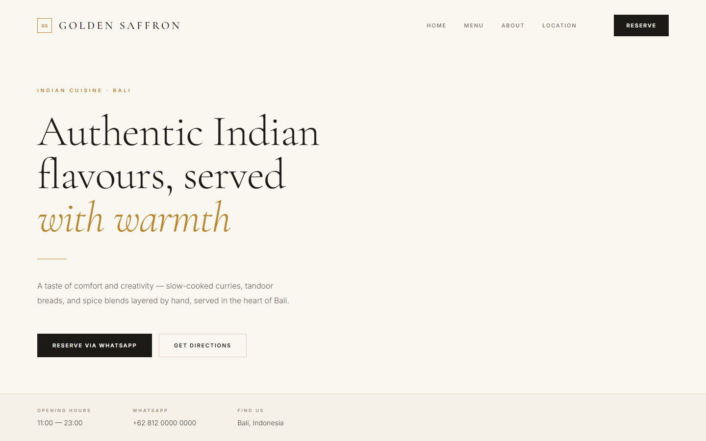
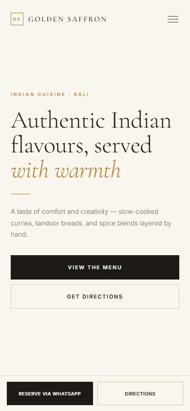
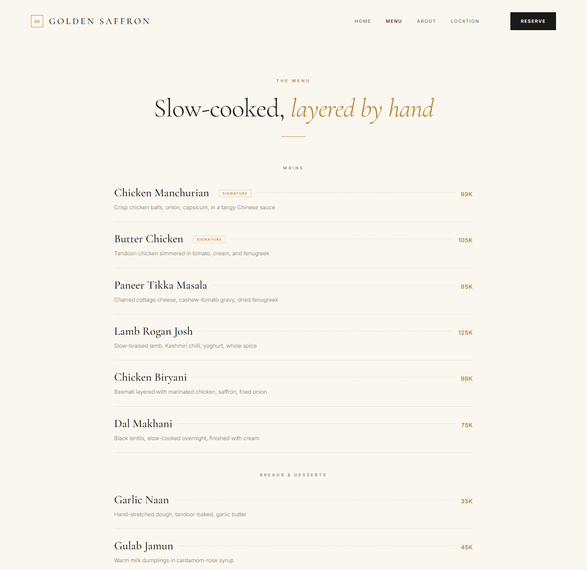

A — Espresso Editorial
Gelap-hangat, serif Fraunces, emas hanya untuk aksi. Paling tenang dan paling aman bila konten minim.
Desktop 1440×900

Mobile 390×844

Menu 1440×1400

Tanpa foto. Tekstur, tipografi, dan ruang kosong sebagai pengganti gambar. Konten contoh realistis.
Gelap-hangat, serif Fraunces, emas hanya untuk aksi. Paling tenang dan paling aman bila konten minim.
Terang, lapang, Cormorant Garamond dengan italic saffron. Paling "fine dining", tapi lebih terasa kosong sebelum foto masuk.



Hitam + saffron, Bricolage Grotesque sangat besar, grid halus. Paling berani, tidak bernuansa India sama sekali.